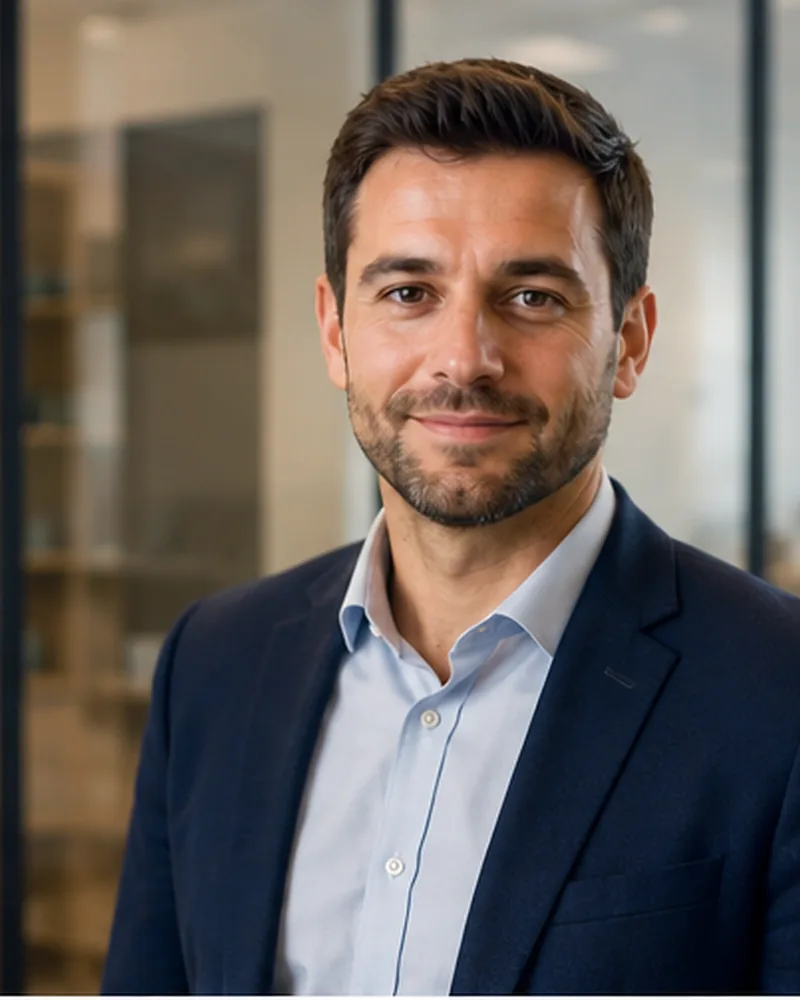
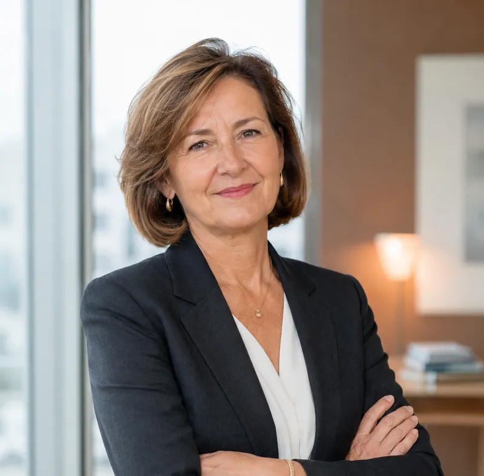
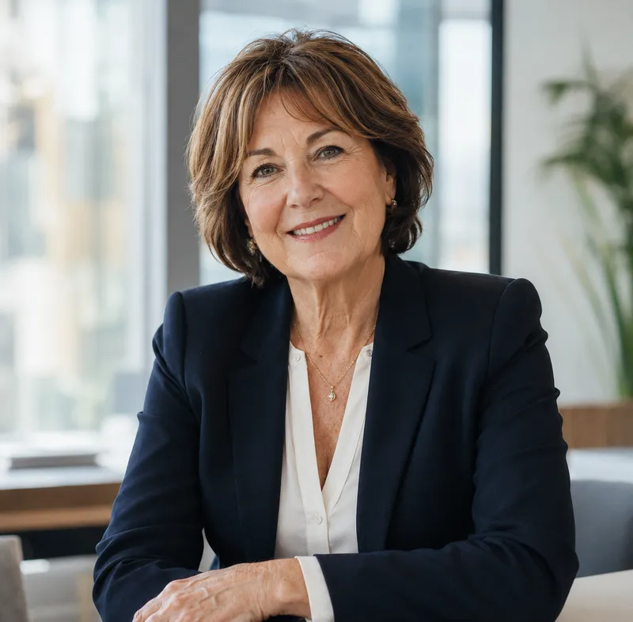
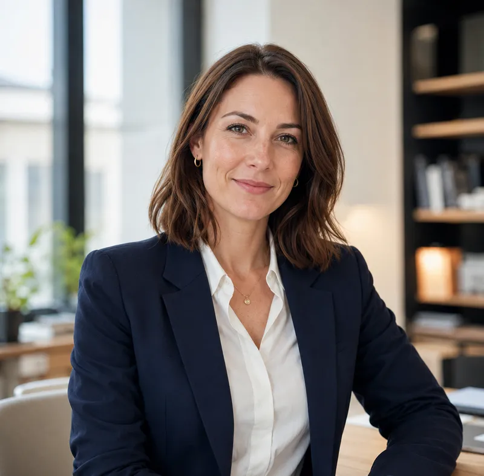
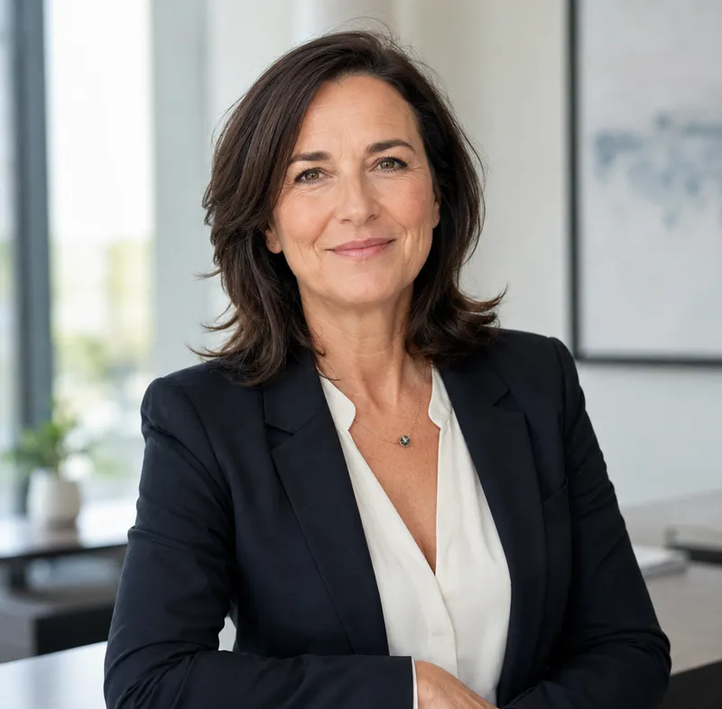
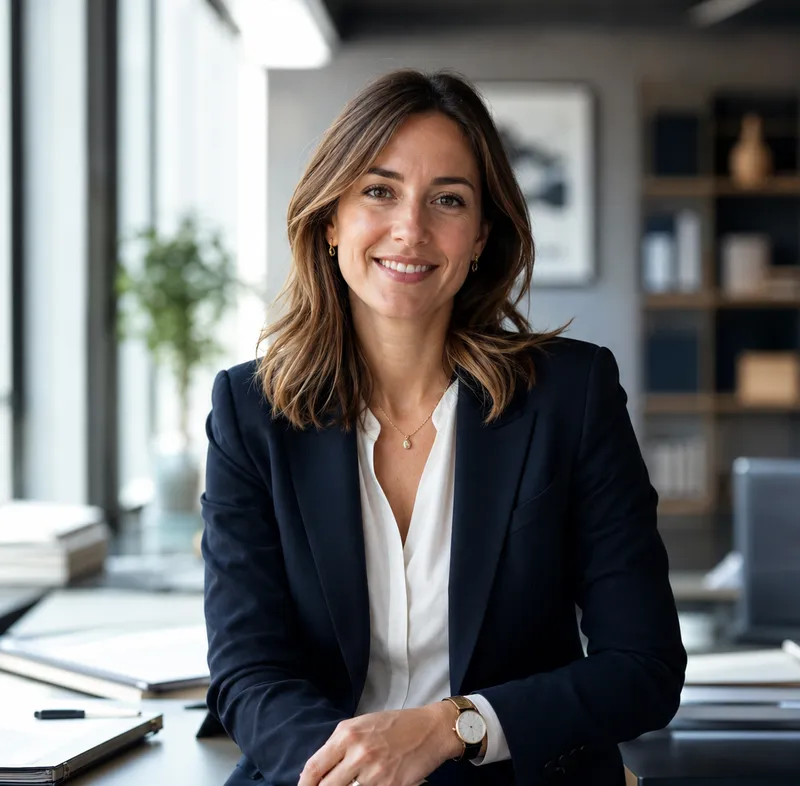
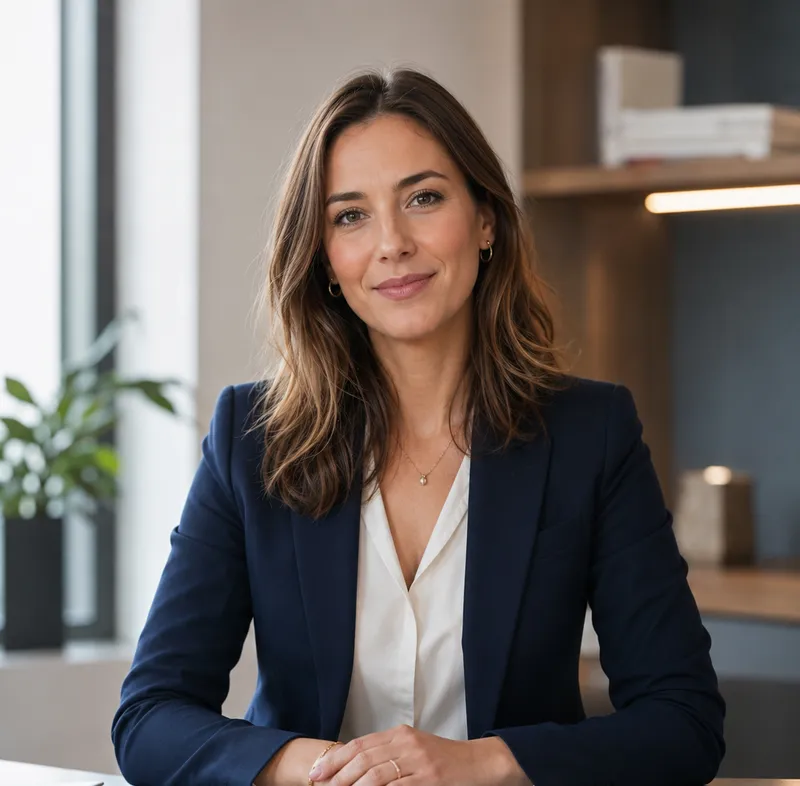

Thierry Bozzola
Expert-comptable · Commissaire aux comptes
27 ans d’expérienceFondateur du cabinet, inscrit à l’Ordre des experts-comptables depuis 1998.Experts-comptables associés, cheffes de mission et collaboratrices comptables : dix-neuf professionnels qui suivent réellement votre dossier et décrochent quand vous appelez S2A.
Expert-comptable · Commissaire aux comptes
27 ans d’expérienceFondateur du cabinet, inscrit à l’Ordre des experts-comptables depuis 1998.
Expert-comptable · Commissaire aux comptes
16 ans d’expérienceAssocié du cabinet, il accompagne les dirigeants sur leurs sujets comptables et financiers.
Cheffe de mission
19 ans d’expérience
Cheffe de mission
22 ans d’expérience
Collaboratrice comptable polyvalente & gestionnaire de paie
9 ans d’expérience
Collaboratrice comptable polyvalente & gestionnaire de paie
12 ans d’expérience
Collaboratrice comptable polyvalente & gestionnaire de paie
7 ans d’expérienceCollaboratrice comptable polyvalente & gestionnaire de paie
14 ans d’expérienceCollaboratrice comptable polyvalente & gestionnaire de paie
18 ans d’expérience
Collaboratrice comptable polyvalente & gestionnaire de paie
6 ans d’expérienceCollaboratrice comptable polyvalente & gestionnaire de paie
11 ans d’expérienceCollaboratrice comptable polyvalente & gestionnaire de paie
8 ans d’expérienceCollaborateurs confirmés, stagiaires ou alternants : nous étudions toute candidature motivée, à Nice comme à Allos. Écrivez-nous en nous présentant votre parcours et ce que vous cherchez.
Envoyer une candidature spontanéeCréation, changement de cabinet, développement, difficultés ou transmission : expliquez-nous votre situation.